什麼是生活習慣病？
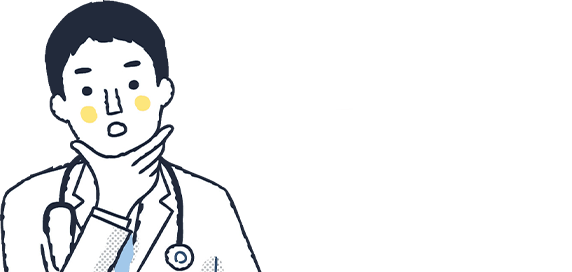

生活習慣病危害國人
健康，不可輕忽
不良生活習慣
我覺得我最難改的NG習慣是哪一個？
我覺得我最難改的
NG習慣是哪一個?
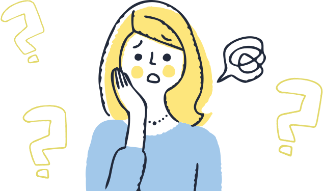 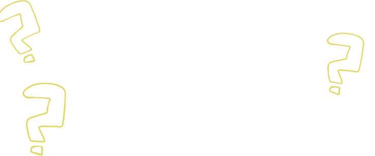 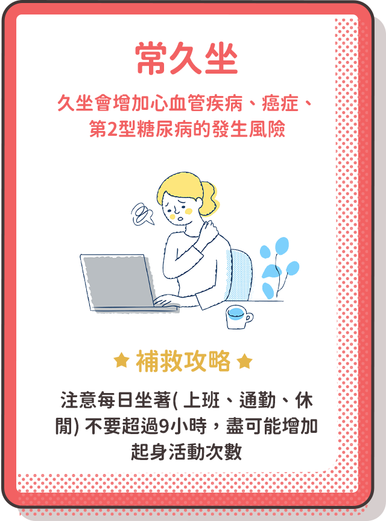常久坐
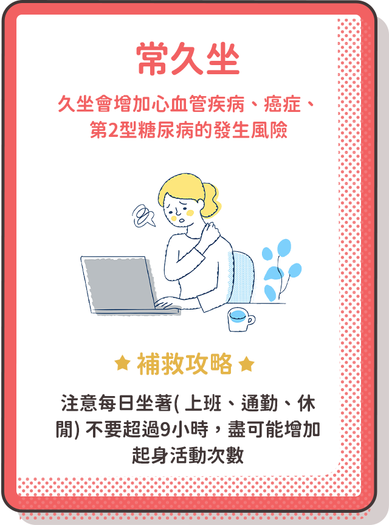常久坐調查
數據大公開
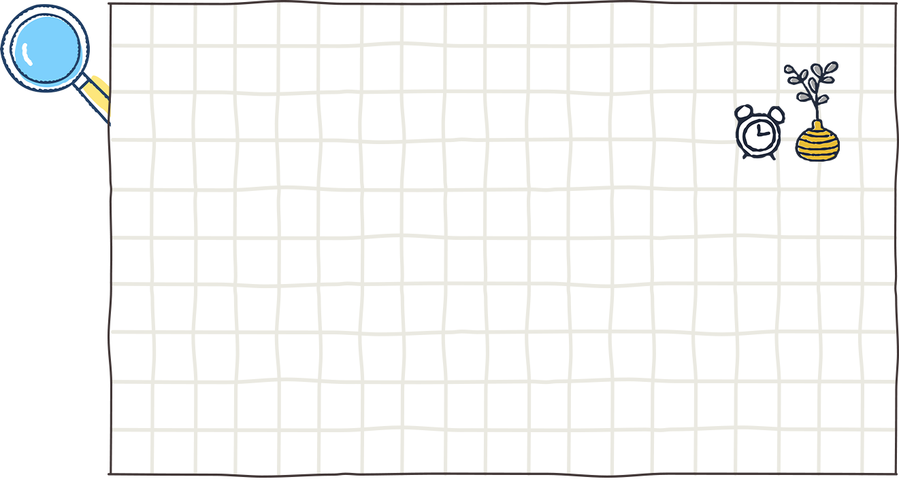
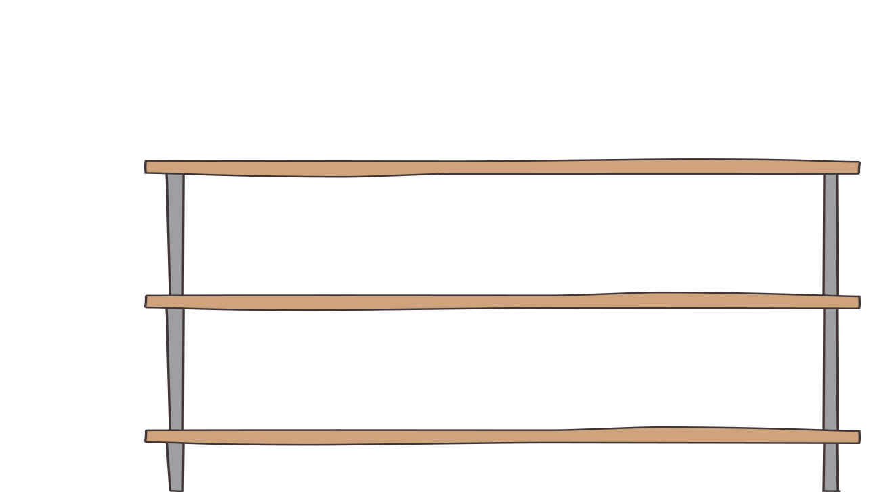
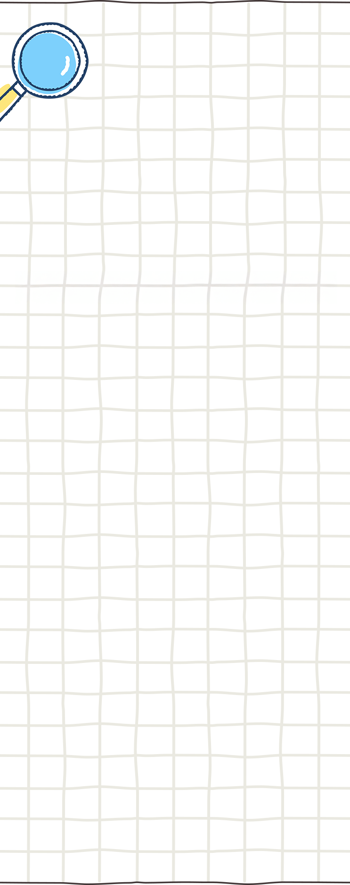
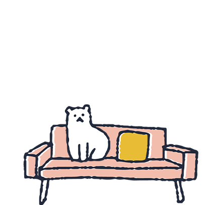
精選12大數據
帶您了解國人生活習慣
這些行為 你做了幾項？
不喜歡運動
沒時間運動
健康問題找 健康管家
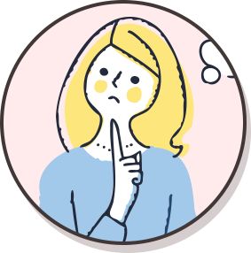
健康疑惑
衛教諮詢
健康協助
自我健康管理促進
守護圈專家教你
戰勝心血管疾病
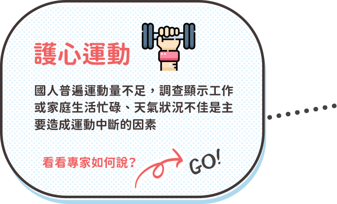
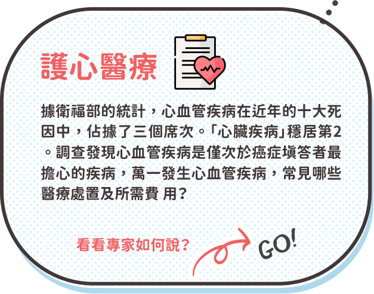
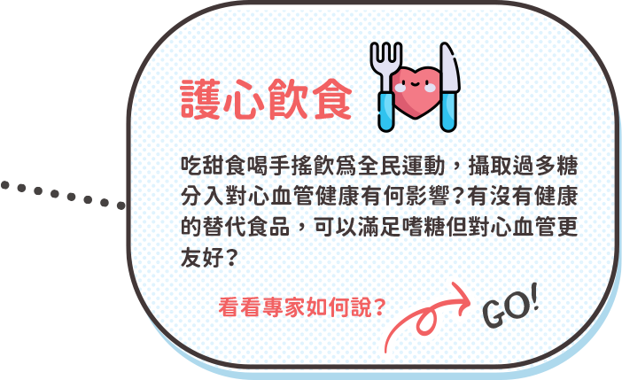
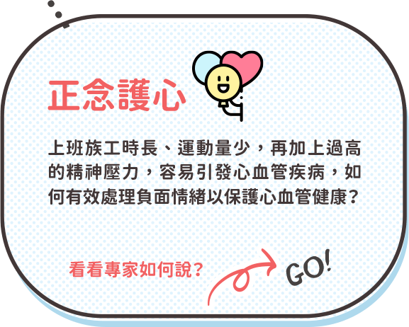
保險保障專家教你
提供保險規劃建議
保夠再保本
「足額」保障的重要性
挑選保險時不要陷入「還本」或「終身」保障等迷思。建議可先以定期險規劃所需保障。
保近再保遠
現階段可能發生的風險做保險規劃
先著眼於人生現階段、或近年可能發生的風險損失做保險規劃，再進一步思考未來退休、長照等較長遠的需求。
保大再保小
先保障家中主要經濟支柱
建構家中主要經濟支柱足夠的保障，避免因意外或疾病對既有生活造成衝擊、甚至造成其他家人的負擔。
注意事項
- 各合作業者提供之專案內容、詳細規定依各特約營運業者為準，活動內容如有任何異動不另行個別通知；本公司享有對本活動解釋、取消、終止、更改或暫停之權利。
- 健康守護圈之加值服務或合作廠商提供之產品、服務或優惠訊息等，均非屬保險契約權利義務之一部分。本公司與合作廠商間無代理或類似關係，合作廠商提供之產品、服務或優惠訊息，係由合作廠商各自提供及負責。
- 參加專案者，必須遵守專案注意事項及其他有關之規定，如有違反，立即自動喪失本專案資格。
- 參加專案者保證所有填寫或提出之資料均為真實且正確，並未有冒用或盜用任何第三人之資料，如有不實或不正確之情事時，將自動喪失專案資格，南山人壽不負任何責任，且如因此致生損害於南山人壽或任何第三人時，參加專案者應負一切相關責任。
- 為保護您的權益，請詳閱南山人壽個人資料保護聲明。
- 如有因不可歸責於南山人壽之事由，致參加本專案者所登錄之資料有延遲、遺失、錯誤、無法辨識或毀損之情況時，南山人壽不負任何法律或賠償責任，參加者亦不得因此異議。